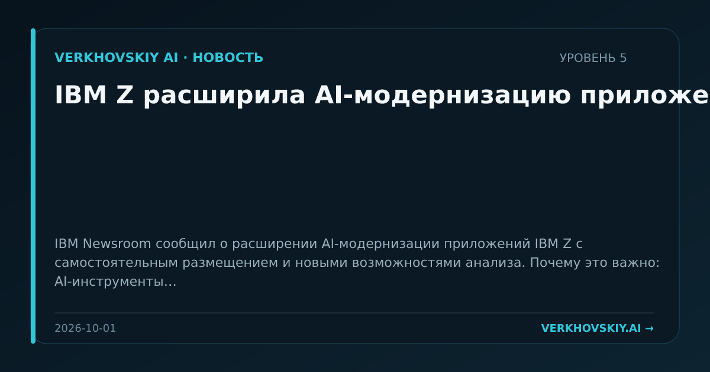

IBM Z расширила AI-модернизацию приложений
IBM Newsroom сообщил о расширении AI-модернизации приложений IBM Z с самостоятельным размещением и новыми возможностями анализа. Почему это важно: AI-инструменты встраиваются в модернизацию унаследованных корпоративных систем. Это открывает рынок не только для новых приложений, но и для перестройки старых контуров предприятий.